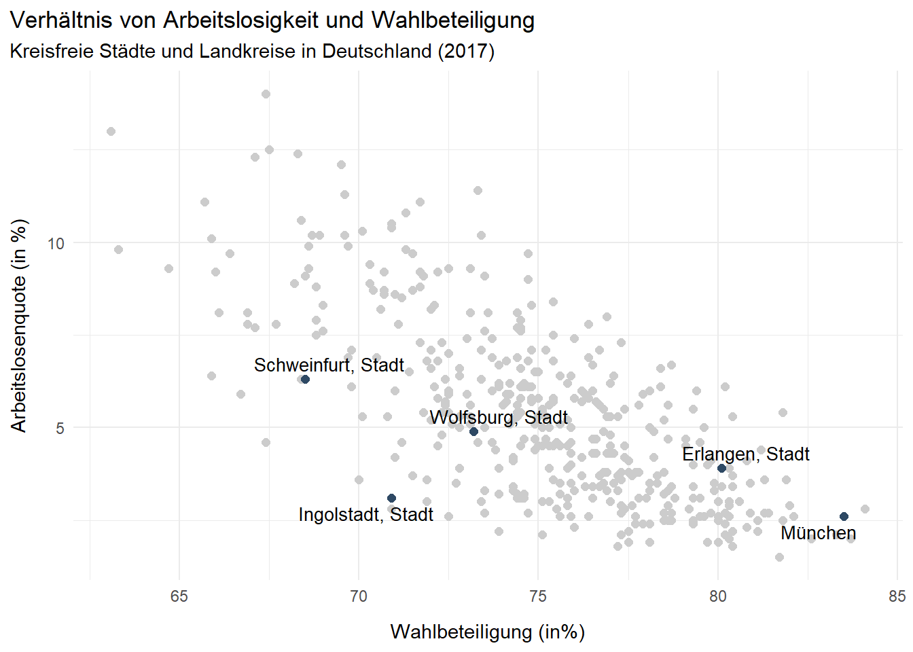

Datenvisualisierung mit ggplot2
Ziele der Sitzung
- Grundverständnis von ggplot2
- Grundlagen der Datenvisualisierung
- Anpassungsmöglichkeiten in ggplot2
- Erstellen publikationsrefier Plots

Was ist ggplot2?
ggplot2 ist eines der bekanntesten und populärsten R-Pakete für Datenvisualisierung. Ursprünglich entwickelt von Hadley Wickham stellt ggplot2 eine Implementierung der “Grammar of Graphics” dar, die Datenvisualisierung in semantische Einheiten (wie Skalen und Ebenen) unterteilt.
Die “Grammar of Graphics” spezifiziert Bausteine, mit welchen Grafiken erstellt werden können. Diese beinhalten, in der Reihenfolge der Anwendung:
Daten (Was soll dargestellt werden?)
Mapping der Aesthetics (Was kommt auf die X- und die Y-Achse, etc.)
Geometrisches Objekt (
geom) (Wie sollen die Daten dargestellt werden? Linien, Punkte, Balken, etc.)Weitere
geoms(z.B. Regressionslinie, etc.)Feinschliff der Axenbeschriftungen, Skalen, etc.
Man sieht also, dass die “Grammar of Graphics” und damit auch ggplot2 ein modulares Konzept verfolgen, wo Ebenen sukzessiv übereinander gelegt werden.
Der wichtigste Frage, die man vor jeder Datenvisualisierung beantworten sollte: Was soll dargestellt werden? Konkreter: Was soll verglichen werden?
!!Hier noch mehr zu generellen Punkten bei Datenvisualisierung!!!
library(tidyverse)
# Laden der Daten
landkreise <-
read_csv('daten_beispiele/Landkreise_merged.csv') %>%
filter(Jahr == 2017)
glimpse(data)## function (..., list = character(), package = NULL, lib.loc = NULL, verbose = getOption("verbose"),
## envir = .GlobalEnv, overwrite = TRUE)Bausteine von ggplot2
Die wichtigsten Bausteine von ggplot2 sollen an einem Beispiel genauer erklärt werden.

Hier werden in einem einfachen Plot die ersten drei Bausteine angewandt, um einen Scatterplot vom Verhältnis der Wahlbeteiligung zur Arbeitslosenquote in den einzelnen Landkreise zu erstellen.
Das erste Argument in der ggplot Funktion data gibt an, welche Daten grafisch dargestellt werden sollen. Da die Daten immer in dem Format sein müssen, in welchem sie nachher im Plot erscheinen, sollte man vor erstellen des Plots darüber nachdenken, was genau dargestellt werden soll. Im Beispiel gegen wir die schon bearbeiteten Daten der landkreise an.
Der zweite Befehl umfasst das Mapping der Aesthetics. Aesthetics (aes) beschreiben wie die Variablen in den Daten zu visuellen Eigenschaften von geoms zugeordnet werden sollen. Im Beispiel sollen die Variable “Wahlbeteiligung” auf der x-Achse und die Variable “Arbeitslosenquote” auf der y-Achse dargestellt werden. Konkretere Beispiele verschiedener Aesthetics werden weiter unten erklärt.
Zuletzt gibt der Befehl geom_point an, in welcher Art die Daten dargestellt werden sollen bzw. welches geometrische Objekt genutzt werden soll. Hier gibt es eine sehr große Auswahl verschiedener geom, um etwa Balkendiagramme, Liniendiagramme, Boxplots, usw. zu plotten.
Aesthetics
In den aesthetics aes() in ggplot2 muss festgelegt werden, welche Variablen aus den Daten wie im Plot dargestellt werden sollen.
Size
Zunächst soll die Größe (size) der Punkte, dem jeweiligen Wert der Variable “BIP” - also des BIP per capita pro Landkreis - entsprechen. Dafür wird in aes() neben den Variablen, die auf der x- bzw. der y-Achse dargestellt werden sollen auch die size = BIP gesetzt.
Im Unterschied zum Code oben werden hier die Daten mit der %>% in das ggplot-Objekt weitergegeben. Das hat den Vorteil, dass etwaige Datentransformationen vorgenommen und dann direkt in ggplot überführt werden können.
Color
Auch die Farbe (color) kann durch Variablenwerte bestimmt werden.
Shape
Zuletzt wird Beispielhaft die Form (shape) der Objekte durch die Variable “Aggregat” festegelt. Hier sieht man auch, dass weitere Aesthetics darüber gelagert werden können. Hier werden shape und color festgelegt.
landkreise %>%
ggplot(aes(x = Wahlbeteiligung,
y = Arbeitslosenquote,
shape = Aggregat,
color = Aggregat)) +
geom_point()In ggplot2 gibt es eine Reihe weiterer Aesthetics, die festgelegt werden können (siehe hier). Hier ist zunächst wichtig, zu verstehen, dass alle
Aesthetics setzen
Neben der Option, Aesthetics über den aes() Befehl zu mappen, kann man aesthetics auch statisch festsetzen. Im Beispiel unten wird hier die Farbe für alle Punkte im Diagramm festgelegt. Hier wird die Farbe also nicht von den Daten auf die Punkte gemapped sondern vom Anwender konkret festgelegt.
landkreise %>%
ggplot(aes(x = Wahlbeteiligung,
y = Arbeitslosenquote)) +
geom_point(color = "#2e4964")Im gleichen Stil können auch andere Aesthetics statisch festgelegt werden.
landkreise %>%
ggplot(aes(x = Wahlbeteiligung,
y = Arbeitslosenquote)) +
geom_point(color = "#2e4964",
size = 2,
shape = 17)
Geoms
geoms können in ggplot2 als Ebenen (Layers) über das vorhandene ggplot-Objekt gelegt werden. Gibt man innerhalb der geoms keine weiteren Aesthetics an, werden die Aesthetics aus der ggplot() Hauptfunktion übernommen.
geom_point()
Im Beispiel von oben gibt geom_point() an, dass die Mappings in einem Scatterplot (in Punkten) dargestellt werden sollen.
landkreise %>%
ggplot(aes(x = Wahlbeteiligung,
y = Arbeitslosenquote,
color = Durchschnittsalter)) +
geom_point()
geom_line()
Mit geom_line() können gewöhnliche Liniendiagramme erstellt werden. Im unten dargestellten Plot werden beispielthaft fünf Landkreise ausgewählt.
geom_bar()
Auch ein Balkendiagramm lässt sich einfach mit dem geom geom_bar() erstellen. Hier wird standardmäßig stat=“bin” benutzt. Dieser Befehl setzt die Höhe jedes Balkens gleich der Anzahl an Beobachtungen pro Gruppe (wie in einem Histogramm). Da hier der Wert der y-Achse aber manuell gesetzt wird, gibt stat=“identity”, dass der Wert aus den Daten gemapped werden soll.
geom_boxplot()
Ein letztes Beispiel zeigt die Erstellung eines Boxplots mit geom_boxplot(). Hier wird die Arbeitslosenquote pro Jahr dargetellt.
data %>%
filter(!is.na(Arbeitslosenquote)) %>%
ggplot(aes(x = Jahr, y = Arbeitslosenquote,
group = Jahr)) +
geom_boxplot()
Weitere geoms
Innerhalb der ggplot2 Umgebung lassen sich ein Vielzahl verschiedener geoms implementieren. Hier findet man eine Übersicht über die wichtigsten geoms.
Kombinieren von geoms
In einem mit ggplot2 erstelltem Plot lassen sich weitere geoms einfach übereinander darstellen. Wichtig hierbei ist, dass jeder weitere Ebene die weiter unten liegenden Ebenen potenziell überlagert.
Im folgenden Beispiel wird über einen gewöhnlichen mit geom_point() erstellten Scatterplot mit einem weiteren geom, geom_smooth() ein Regressionlinie abgebildet. In dem Befehl method = “lm” steht “lm” für “linear model”, das eine lineare Regressionslinie umschreibt.
data %>%
filter(Jahr == 2017) %>%
ggplot(aes(x = Wahlbeteiligung,
y = Arbeitslosenquote)) +
geom_point() +
geom_smooth(method = "lm",
color = "black")
Die Verbindung mehrerer geoms kann auch mit weiteren Aesthetics kombiniert werden. Das Beispiel unten zeigt etwa jeweils eingefärbte Punkte und Regressionslinien für kreisfreie Städte und Landkreise.
data %>%
filter(Jahr == 2017) %>%
ggplot(aes(x = Wahlbeteiligung,
y = Arbeitslosenquote,
group = Aggregat,
col = Aggregat)) +
geom_point() +
geom_smooth(method = "lm")Themes
Themes in ggplot2 beziehen sich auf alles in einem Plot, was nichts mit den Daten zu tun hat. Über theme_set() kann ein Theme entweder global festgelegt werden oder innerhalb eines ggplot Codes festgelegt werden.
ggplot2 beinhaltet vorinstalliert eininge Themes, die sofot genutzt werden können. Diese sind etwa theme_classic():
landkreise %>%
ggplot(aes(x = Wahlbeteiligung,
y = Arbeitslosenquote,
color = Durchschnittsalter)) +
geom_point() +
theme_classic()theme_bw()
landkreise %>%
ggplot(aes(x = Wahlbeteiligung,
y = Arbeitslosenquote,
color = Durchschnittsalter)) +
geom_point() +
theme_bw()oder theme_minimal
landkreise %>%
ggplot(aes(x = Wahlbeteiligung,
y = Arbeitslosenquote,
color = Durchschnittsalter)) +
geom_point() +
theme_minimal()
Weitere vorinstallierte Themes findet man hier.
Es besteht zudem die Möglichkeit, Themes selbst nach den eigenen Vorstellungen anzupassen. Hier lassen sich alle vorstellbaren Elemente anpassen. Eine Übersicht über die jeweiligen Befehle findet sich hier hier.
Im Beispiel unten werden neben der Schriftgröße (base_size = 14) mit dem zusätzlichen Befehl theme() weitere Anpassungen vorgenommen. Wichtig hierbei ist, dass mehrere theme Befehle sich gegenseitig überlagern können.
landkreise %>%
ggplot(aes(x = Wahlbeteiligung,
y = Arbeitslosenquote,
color = Durchschnittsalter)) +
geom_point(size = 2) +
theme_minimal(base_size = 14) +
# plot.background setzt den Hintergrund hinter dem Plot fest
theme(plot.background = element_rect(fill = "grey80", color = "grey80"),
# Hier werden die gridlines entfernt
panel.grid.major = element_blank(),
panel.grid.minor = element_blank(),
# Hier wird die Legende entfernt
legend.position = "none")
Titel und Achsenbeschriftungen
Auch Titel, Untertitel und Achsenbeschriftungen von Plots lassen sich in ggplot2 einfach festelegen. Hier wird zunächst wie oben das Theme definiert. Mit dem Befehl theme_update() wird das aktuelle Theme weiter angepasst. Hier werden die Abstände der X- und Y-Achsenbeschriftung leicht erhöht und die Position der Überschrift auf ganz links im Plot festgelegt.
Über den labs Befehl lassen sich dann x-Achse y-Achse title und subtitle definieren.
theme_set(theme_minimal())
theme_update(axis.title.y =
element_text(margin = margin(t = 0, r = 10, b = 0, l = 0)),
axis.title.x =
element_text(margin = margin(t = 10, r = 0, b = 0, l = 0)),
plot.title.position = 'plot')
landkreise %>%
ggplot(aes(x = Wahlbeteiligung,
y = Arbeitslosenquote)) +
geom_point(color = "#2e4964") +
labs(x = "Wahlbeteiligung (in%)",
y = "Arbeitslosenquote (in %)",
title = "Verhältnis von Arbeitslosigkeit und Wahlbeteiligung",
subtitle = "Kreisfreie Städte und Landkreise in Deutschland (2017)")
Text
Auch Textdaten lassen sich in ggplot2 einfach darstellten. Hier werden mit geom_text() die Namen der jeweiligen Landkreise und kreisfreien Städte geplottet.
data %>%
filter(Jahr == 2017) %>%
ggplot(aes(x = Wahlbeteiligung, y = Arbeitslosenquote, label = Raumeinheit)) +
geom_text() +
labs(x = "Wahlbeteiligung (in%)",
y = "Arbeitslosenquote (in %)",
title = "Verhältnis von Arbeitslosigkeit und Wahlbeteiligung",
subtitle = "Kreisfreie Städte und Landkreise in Deutschland (2017)")Zu viel Text gleichzeitig darzustellen ist allerdings nicht immer sinnvoll, da es so schnell unübersichtlich wird. Hier macht es meist mehr Sinn, Textelemente selektiver zu nutzen. Im Beispiel unten werden die fünf Städte mit dem höchsten BIP pro Kopf hervorgehoben und mit einem Label namentlich genannt.
Hier lassen sich auch die verschiedenen Ebenen von ggplot2 noch einmal verdeutlichen, die übereinander gelegt werden. Hier werden zunächst alle Städte und Landkreise in grau (“grey80”) geplottet, um dann mit subset ein Subset der Daten (solche Beobachtanugen mit einem BIP größer 92.5) farbig darüber zu legen.
Der Befehl geom_text_repel() aus der ggrepel Bibilothek plottet dann die Label für dieses Subset. Durch den Beisatz “repel” werden die Label hier so dargestellt, dass sie nicht den eigentlichen Punkt überlagern.
data %>%
filter(Jahr == 2017) %>%
ggplot(aes(x = Wahlbeteiligung, y = Arbeitslosenquote)) +
geom_point(color = "grey80",
size = 2.0) +
geom_point(data = subset(data,
BIP > 92.5 & Jahr == 2017),
color = "#2e4964",
size = 2.0) +
ggrepel::geom_text_repel(data = subset(data,
BIP > 92.5 & Jahr == 2017),
aes(label = Raumeinheit),
size = 3.5) +
labs(x = "Wahlbeteiligung (in%)",
y = "Arbeitslosenquote (in %)",
title = "Verhältnis von Arbeitslosigkeit und Wahlbeteiligung",
subtitle = "Kreisfreie Städte und Landkreise in Deutschland (2017)")
Facets
Oft gelingt es nicht, die gewünschten Informationen in einen einzelnen Plot unterzubringen. Hier bietet es sich an, Multi-Panel Plots zu erstellen. Hierfür gibt es mehere Möglichkeiten, an dieser Stelle soll der facet_wrap() diskutiert werden. In diesem Befehl können mit einem Tilde (~) die jeweiligen Variablen übergeben werden, die in verschiedenen Panels innerhalb eines Plots dargestellt werden sollen.
Im folgenden Beispiel wird die Wahlbeteiligung so nicht nur für ein Jahr dargestellt, sondern für alle im Datensatz verfügbaren Wahljahre. Mit dem Befehl facet_wrap(~Jahr) wird also für jedes Wahljahr ein eigenes Panel erzeugt.
data %>%
filter(!is.na(Wahlbeteiligung)) %>%
ggplot(aes(x = Wahlbeteiligung, y = Arbeitslosenquote)) +
geom_point() +
facet_wrap(~Jahr) +
labs(title = "Verhältnis von Wahlbeteiligung, Arbeitslosenquote und Durchschnittsalter",
subtitle = "Deutsche Landkreise und kreisfreie Städte (1998-2017)",
x = "\nWahlbeteiligung",
y = "Arbeitslosenquote\n") +
theme_minimal() +
theme(plot.title.position = 'plot')
Auch hier können wieder weitere Aestheitcs angepasst werden. Um die Grafik vom Anfang zu erzeugen, wird zusätzlich noch das Durchschnittsalter als Farbe übergeben. Der Befehel scale_color_viridis_c() gibt eine Farbpalette an, mit welcher die Punkte je nach Wert gefüllt werden sollen.
data %>%
filter(!is.na(Wahlbeteiligung)) %>%
ggplot(aes(x = Wahlbeteiligung, y = Arbeitslosenquote,
col = Durchschnittsalter)) +
geom_point() +
scale_color_viridis_c(direction = -1) +
facet_wrap(~Jahr) +
labs(title = "Verhältnis von Wahlbeteiligung, Arbeitslosenquote und Durchschnittsalter",
subtitle = "Deutsche Landkreise und kreisfreie Städte (1998-2017)",
x = "\nWahlbeteiligung",
y = "Arbeitslosenquote\n") +
theme_minimal() +
theme(plot.title.position = 'plot')